17. Postgres-BDR
Postgres-BDR (or just BDR, for short) is an open source project from 2ndQuadrant that provides multi-master features for PostgreSQL.
In this chapter, we will use a 2-node cluster to demonstrate Postgres-BDR 9.4. Note that on each PostgreSQL instance, you need to configure:
wal_level = 'logical'
track_commit_timestamp = on
max_worker_processes = 10 # one per database needed on provider node
# one per node needed on subscriber node
max_replication_slots = 10 # one per node needed on provider node
max_wal_senders = 10 # one per node needed on provider node
shared_preload_libraries = 'bdr'
Also make sure to adjust file pg_hba.conf to grant access to replication
between the 2 nodes.
Creating a test environment
OmniDB repository provides a 2-node Vagrant test environment. If you want to use it, please do the following:
git clone --depth 1 https://github.com/heptau/omnidb
cd OmniDB/OmniDB_app/tests/vagrant/postgresql-bdr-9.4-2nodes/
vagrant up
It will take a while, but once finished, 2 virtual machines with IP addresses
10.33.4.114 and 10.33.4.115 will be up and each of them will have PostgreSQL
10 listening to port 5432, with all settings needed to configure BDR
multi-master replication. A new database called omnidb_tests is also created
on both machines. To connect, user is omnidb and password is omnidb.
Install OmniDB BDR plugin
OmniDB core does not support BDR by default. You will need to download and install BDR plugin. If you are using OmniDB server, these are the steps:
wget https://omnidb.org/dist/plugins/omnidb-bdr_1.0.0.zip
unzip omnidb-bdr_1.0.0.zip
sudo cp -r plugins/ static/ /opt/omnidb-server/OmniDB_app/
sudo systemctl restart omnidb
And then refresh the OmniDB web page in the browser.
For OmniDB app, these are the steps:
wget https://omnidb.org/dist/plugins/omnidb-bdr_1.0.0.zip
unzip omnidb-bdr_1.0.0.zip
sudo cp -r plugins/ static/ /opt/omnidb-app/resources/app/omnidb-server/OmniDB_app/
And then restart OmniDB app.
If everything worked correctly, by clicking on the "plugins" icon in the top right corner, you will see the plugin installed and enabled:
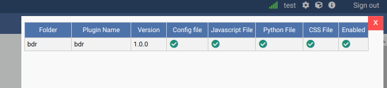
Connecting to both nodes
Let's use OmniDB to connect to both PostgreSQL nodes. First of all, fill out connection info in the connection grid:
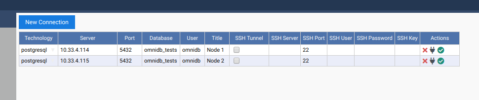
Then select both connections.
Create required extensions
BDR requires 2 extensions to be installed on each database that should have
multi-master capabilities: btree_gist and bdr. Inside OmniDB, you can create
both extensions by right clicking on the Extensions node, and choosing the
action Create Extension. OmniDB will open a SQL template tab with the CREATE
EXTENSION command ready for you to make some adjustments and run:
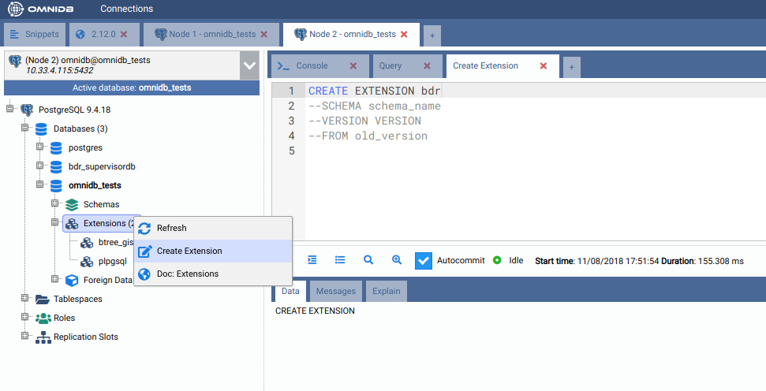
You need to create both extensions btree_gist and bdr on both nodes.
Create the BDR group in the first node
With both extensions installed, you can refresh the root node of the OmniDB tree view. A new BDR node will appear just inside your database. You can expand this node to see some informations about BDR:
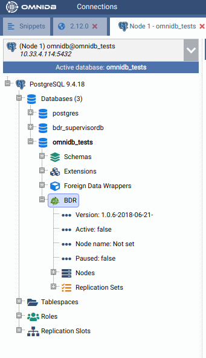
As you can see, BDR is not active yet. In the first node, we need to create a BDR group. The other nodes will join this group later.
To create a BDR group, right click in the BDR node. In the SQL template, adjust the node name and the node external connection info (the way other nodes will use to connect to this node):
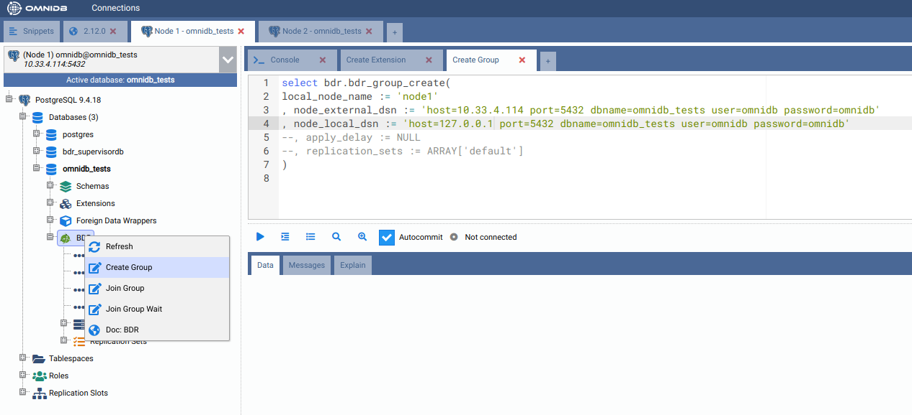
After you execute the above command, right click the BDR node and choose
Refresh. You will see that now BDR is active in this node, now called node1.
If you expand Nodes, you will see that this BDR group has only 1 node:
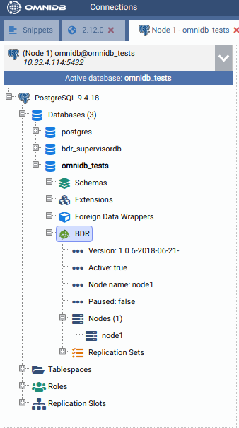
Join the BDR group in the second node
Now let's move to the other node. You can see that BDR is installed but not active yet. To link the two nodes, we will need to make this node join the BDR group that was previously created in the first node:
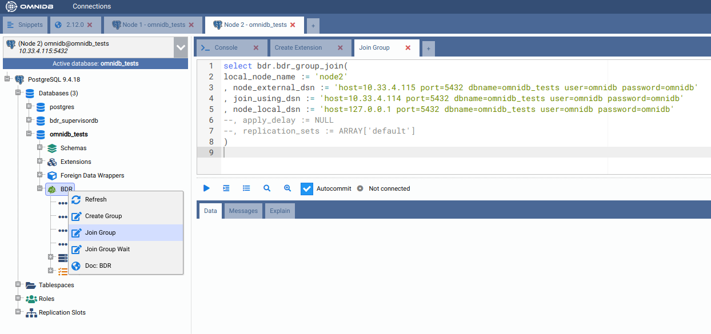
And now we can see that the second node has BDR active, his name in the BDR
group is node2, and now the BDR group has 2 nodes:
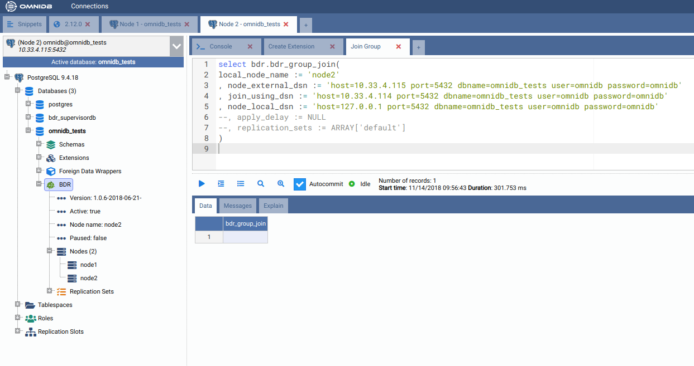
Creating a table in the first node
Let's create a table in the first node. Expand the public schema, right click
the Tables node and choose Create Table. Give the new table a name and add
some columns. When done, click in the button Save Changes:
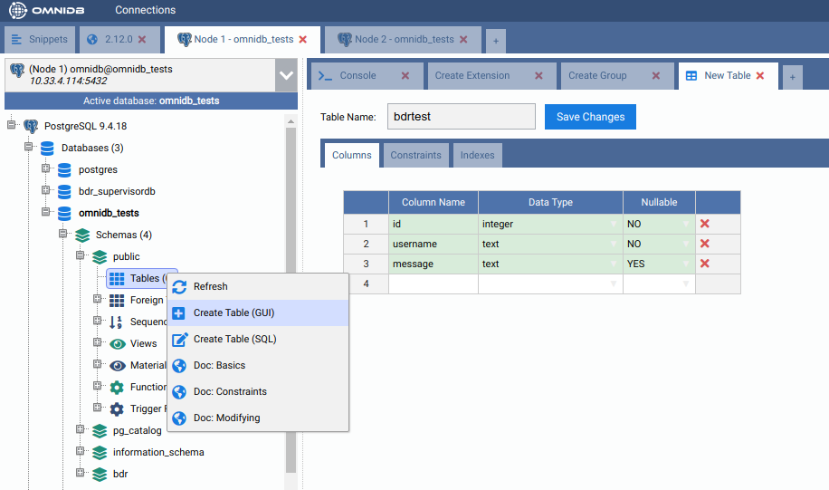
Now confirm that the table has been created in the first node by right clicking
the Tables node and choosing Refresh. Go to the second node, expand the
schema public, then expand the Tables node. Note that the table has been
replicated from node1 to node2. If the table was created in the second node,
it would have been created in the first node as well, because in BDR all nodes
are masters.
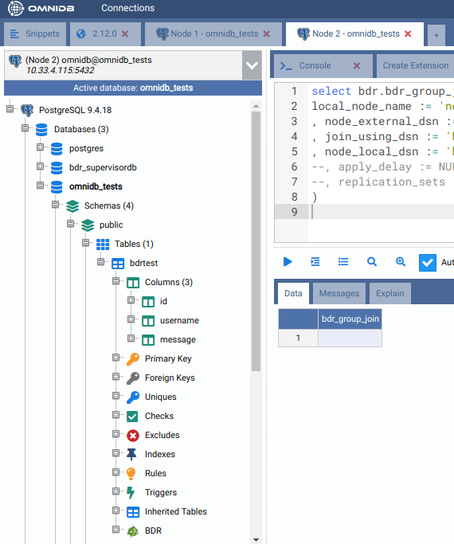
Adding some data in the second node
While you are at the second node, right click the table bdrtest, point to
Data Actions and then click in Edit Data. Add some rows to this table. When
finished, click in the Save Changes button.
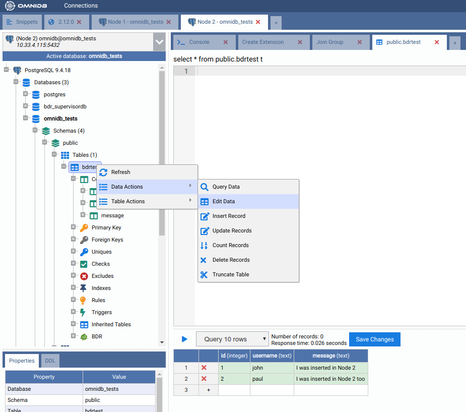
Now go to the first node, right click the table, point to Data Actions and
then click in Query Data. See how the rows created in node2 were
automatically replicated into node1.
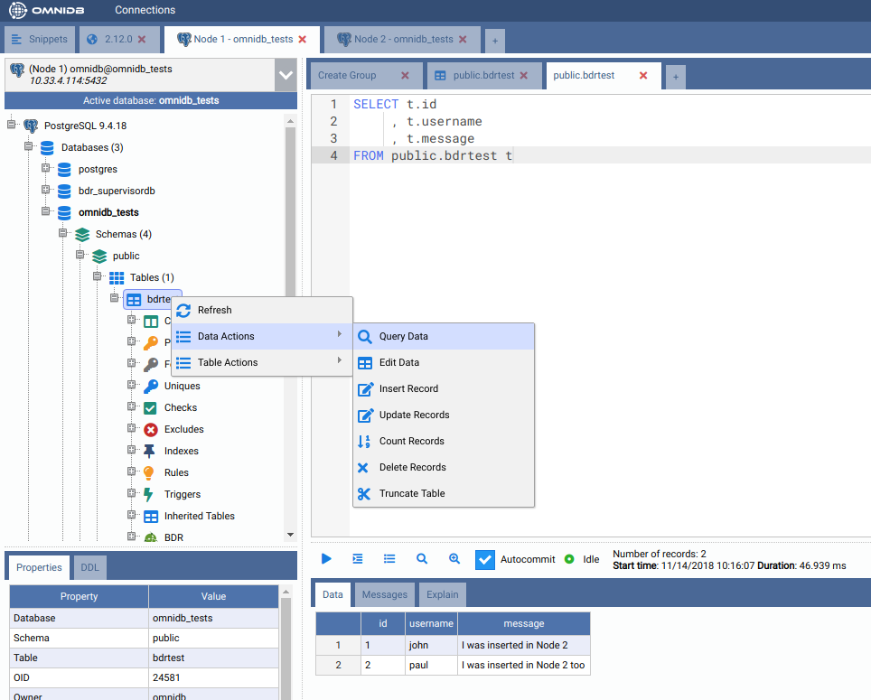
Adding some data in the first node
Let's repeat the same procedure above, but instead of inserting rows from the second node, let's insert some rows while connected to the first node. Note how they replicate into the second node in the same way.
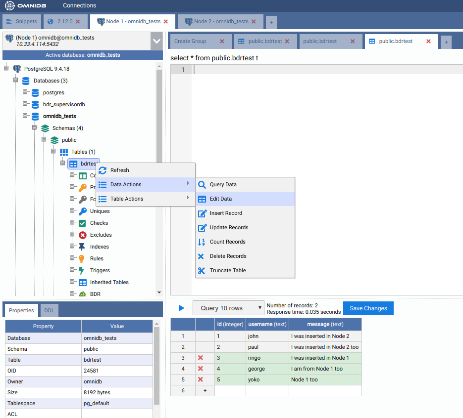
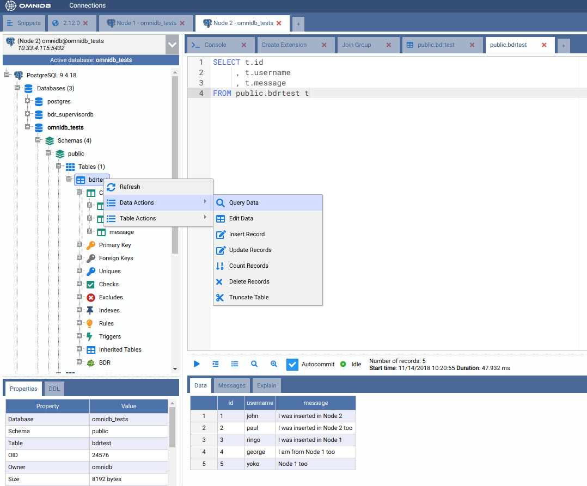